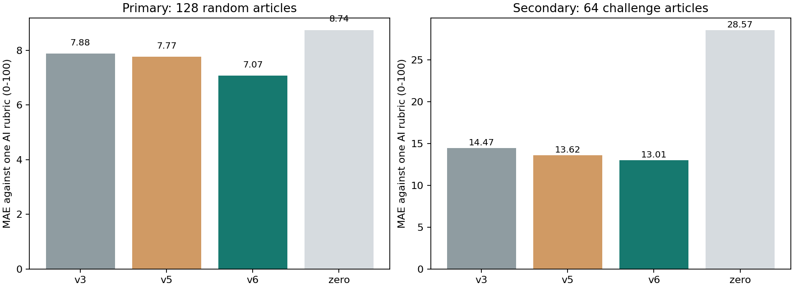

NEWS2NEURON / REPRODUCIBLE AI REFERENCE EVALUATION / v6
잔존 위험을 더 정확하게,
개선 근거는 검증 가능하게.
실제 한국어 뉴스 8,128건을 대상으로 한 연구 지수입니다. 사건 발생 확률·사람의 스트레스·독립 사람 정답 정확도를 뜻하지 않습니다.
v5 → v6 평균 절대오차새 무작위 128건 · 100점 척도
10점 이내 AI 일치율같은 새 기사, 직접 덮기 전 모델 예측
사전 검증 기준모델·임계값·표본 고정 뒤 평가
개선의 범위와 한계
기준 판정은 현재 Codex 한 AI가 내렸습니다. 통계 범위는 이 AI 기준에 대한 오차이며, 기준 자체의 진실성이나 미래 뉴스·사람 판단에 대한 정확도를 입증하지 않습니다. 이전 판정 사건군을 제외한 표본이므로 전체 뉴스 분포의 대표성도 보장하지 않습니다.
기존 평가 자료는 개발 자료로 전환했습니다. 새 학습 128건과 새 평가 192건은 저장된 정제 본문 전체를 읽고 판정했습니다. 주 평가는 매체별 무작위 16건씩 128건, 어려운 기사 64건은 별도 보조 평가입니다. 결과를 본 뒤 기사·기준·점수를 제외하거나 고치지 않았습니다.
같은 새 표본의 모델 비교

항상 0으로 예측하는 기준도 포함합니다. 무위험 기사가 많다는 이유만으로 좋은 모델이라고 판단하지 않도록 위해 재현율과 큰 오차를 함께 공개합니다.
전체 기사 평가